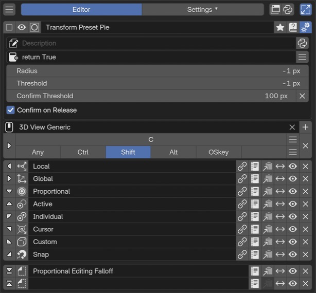

Pie Menu Editor¶
Pie Menu arranges actions in Blender’s pie menu. Edit eight directional items and two extra slots at the top and bottom. Open it from a shortcut or another menu’s Menu slot.
Setting names and constraints on this page describe PME 2.1. Older images and videos may show a different interface or arrangement.
Configuration guide — features, combinations, and uses (for AI)
Name: Pie Menu / Type ID: PMENU.
Use the name in user explanations and the type ID when checking data or implementation.
Its role is to display the contents of eight directional slots and two extras using Blender’s native pie menu.
There are ten fixed slots. Empty slots retain their positions.
Slot assignments
Tab |
Assignment and purpose |
Type ID |
|---|---|---|
Command |
Runs an action: one operator or Python performing several operations |
|
Property |
Places a widget to display or change a value at an RNA property path |
|
Menu |
References another PME customization. Invocation and drawing depend on the target |
|
Hotkey |
Finds a key assignment in the runtime context and runs its operator. See difference from key input |
|
Custom |
Draws UI directly with Python using Blender’s |
|
Unassigned slots are empty (EMPTY). Before proposing code, check destination-specific constraints in
Code Input and Execution.
Common Menu combinations
Pie Menu → Pie Menu: opens a nested pie. To organize actions by category and move into a child while holding the trigger key, enable the parent’s Confirm on Release and a positive Confirm Threshold. See nested setup.
Pie Menu → Regular Menu / Popup Dialog: opens a separate menu, or places its contents inside the pie with Expand Regular Menu / Expand Popup Dialog. Expanded Popup Dialog width and position can be set on the destination slot. See expansion options and requirements.
Pie Menu → Property / Property Stack: places the property’s widget. This is not an action that opens a child menu.
These are examples, not an exhaustive target list. Menu tab references and script calls from Command use different routes.
Uses and design decisions
Open from a hotkey: choose the editor, Keymap, and key. Click Drag uses the setting value
TWEAK. See Keymap / Hotkey.Use as a Context Router branch: choose a Pie Menu by mode or target. Define branch conditions and fallback behavior. See context-dependent switching.
Move from a parent pie into detailed actions: assign categories to the parent and individual actions to children. Choose between clicking to open or holding the key and moving outward. See nested setup.
Combining menus does not guarantee that each action has its required editor, mode, and target. See Poll for availability, and menu slots for placement and editing.
Interface and editing workflow¶

1Name and basic controlsThe menu name identifies the entire customization. Use this row to enable it and open the preview or advanced settings. 2Advanced settingsSet the description, availability conditions, pie radius, and how items are selected and confirmed. 3Keymap / HotkeyKeymap selects where the menu is invoked; Hotkey selects the key and modifiers. Open Mode defines the input, such as pressing or holding the key. 4Menu slotsPlace actions, properties, or other menus in ten fixed slots: eight directions plus top and bottom. Empty slots are not displayed.Configure advanced settings and invocation, then assign actions or properties to the ten slots.
Expand Slot Tools is a display setting that exposes edit, copy, move, and other controls at each slot’s right end. See the shared Expand Slot Tools description for their behavior. Names, tags, search, adding menus, and overall editor operation are covered in Common Editor Elements. The following sections describe Pie Menu-specific placement and behavior.
Name and basic controls¶
From left to right: Enable/Disable → Preview → Menu selector → Name → Tags → Documentation → Advanced settings.
The menu name identifies the entire customization: Transform Preset Pie in the image. Use this row to set the name and enabled state and open preview or advanced settings. It is separate from the display names on individual slots. See selected menu settings for each button.
Advanced settings¶
Advanced settings controls the description, availability, display radius, and how items are selected and confirmed. Open it with the selected menu’s gear button.
Description: the menu’s description, optionally returned dynamically by Python. See the shared Description settings.
Poll: tests whether the menu is available in the current context. See the shared Description / Poll settings.
The following settings control Pie Menu distances and confirmation.
Setting |
Meaning |
Range and default |
|---|---|---|
Radius |
Display radius, separate from selection distance |
|
Confirm on Release |
Enables confirming an item by releasing the trigger key |
On by default |
Threshold |
Distance from the center before directional selection starts |
|
Confirm Threshold |
Additional distance beyond Threshold for distance-based confirmation |
|
Distance fields use pixels. Blender’s UI scale also affects the actual thresholds. Threshold and Confirm Threshold appear when Confirm on Release is on. With it off, these per-menu distance settings are not used.
When Radius differs from Blender’s current value, PME temporarily disables pie menu animation to apply the custom display radius.
Selection distance versus display radius¶
This diagram shows the distances used when holding the trigger key to select an ordinary directional item. Radius controls where items are drawn and is not added to the confirmation distance.
flowchart LR
A["Center"] -->|"Threshold"| B["Selection begins"]
B -->|"Confirm Threshold"| C["Distance confirmation boundary"]
Distance-based confirmation is available when Confirm Threshold is positive.
For example, Threshold 20 and Confirm Threshold 40
put the confirmation boundary 60 from the center before UI scaling.
Confirm Threshold does not need to exceed Threshold.
Crossing the boundary does not execute immediately: Blender confirms after detecting a brief pause in mouse movement.
Confirm on Release also does not guarantee that a short tap of the trigger key closes the menu. A short tap can switch Blender to click selection instead.
Keymap / Hotkey¶
From top to bottom: Keymap (where) → Hotkey (trigger key) → Modifiers. Use the triangle on the left to set Open Mode (trigger action).
Keymap selects where the menu is available; Hotkey defines its key combination. See the shared Hotkey settings for the input controls.
Standard Open Modes are Press / Hold / Double Click / Click Drag / Key Chords. Click Drag opens the menu through a dragging action. Distinguish Experimental modes from the ordinary choices.
Open Mode determines when the menu opens. It is separate from Confirm on Release and Threshold, which affect selection and confirmation after opening.
Menu slots¶
The first eight rows correspond to the eight pie directions; the two separated rows below are the extra top and bottom slots. The image has Expand Slot Tools on, exposing action buttons at the right.
Slots are the actions, properties, and other items placed in the pie. Pie Menu has ten slots.
Eight directions (up, down, left, right, and four diagonals) plus two extra vertical slots at the top and bottom.
Slot positions and count are fixed. Move Slot swaps contents between positions.
Directions are absolute screen directions relative to the menu’s invocation position.
Empty slots are not drawn in the pie.
The following slot types are available. Shared field controls and code guidance are in the Slot Editor section.
Type |
Content placed in the pie |
|---|---|
Command |
An item that runs an action when selected |
Property |
A widget displaying and changing a value at an RNA path |
Menu |
A link to another PME menu |
Hotkey |
An item invoking an operator from a key assignment in the runtime context |
Custom |
UI drawn directly with Python and Blender’s |
Adding several Custom elements directly to the pie layout shifts the directions used by subsequent items. See Custom under slot types for grouping UI within one slot. Editing, icons, labels, and extra tools are covered in the shared slot list.
A. Edit a slot¶
Click the leftmost direction arrow to open the Slot Editor. Choose Command / Property / Menu or another tab and configure the contents. In this image, the arrow indicates the slot’s pie position.
B. Icon¶
The control next to the arrow sets the icon displayed on the slot. It is separate from the leftmost Edit Slot button.
C. Display name¶
Text such as Local is the slot label shown in the menu. It is separate from the overall customization name and the target selected in the Menu tab.
D. Open the linked customization for editing¶
The chain button opens the customization linked in the Slot Editor’s Menu tab. Use it to inspect or edit linked content. Configure the target itself in the Menu tab. It appears only where linked-menu navigation applies.
E. Slot actions (Expand Slot Tools)¶
The right end contains slot actions. In this image, Settings > General > Expand Slot Tools is on, so actions normally grouped in a menu appear as individual icons.
From left to right: Edit Slot / Copy / Move Slot / Enabled or Disabled / Clear. Paste also appears when a slot has been copied. This exposes action buttons, not the slot’s configuration fields. See the shared Expand Slot Tools description.
Create and check an item¶
Click Edit Slot at the desired one of the ten positions.
Choose Command / Property / Menu / Hotkey / Custom according to its purpose.
Set the contents, display name, and icon, then confirm with OK.
Open the menu in the intended editor and check direction and behavior.
See slot presets for creating items from existing presets. For code, Code Input and Execution explains destinations and limits. Opening preview alone does not prove that an action works with the mode and selection at its actual invocation site.
Advanced uses¶
Switch by context¶
Added in version 2.1: Conditional routing with Context Router.
Use Context Router to choose a menu by mode or target object. Define condition scope and fallback behavior, then configure each branch’s target.
Even when testing conditions in code, do not treat every non-Object Mode context as Mesh Edit Mode, or assume an active object always exists.
Nested Pie Menus — from categories to actions¶
For example, place Selection and Transform in a parent Modeling pie and link each to a separate Pie Menu. Set the parent’s directional slots to Menu and select existing child Pie Menus. No Command code is needed simply to open a child.
Use the parent’s Confirm Threshold to enter a child while holding the trigger key. When distance-based confirmation occurs in the parent, the selected Menu slot opens its child.
Set the parent to open from a hotkey and enable its Confirm on Release.
Set the parent’s Confirm Threshold to a positive value. For example, Threshold
20plus Confirm Threshold40gives a boundary60from the center before UI scaling. These are illustrative values, not fixed recommendations; adjust for comfortable use.Hold the trigger key, move toward the child, then pause briefly beyond the boundary to enter it. Merely crossing the boundary does not open it instantly.
Confirm Threshold 0 disables this distance-based confirmation.
Changing Radius alone does not change the confirmation distance.
See Advanced settings for the calculation and defaults.
This example applies to directional Menu slots; the top and bottom extras do not use the same directional selection.
Check entering the child while holding the key separately from confirming the intended child action. Increase the parent’s confirmation distance if you enter children accidentally; reduce it if entering is difficult.
Open a Menu target or expand its contents inside the pie¶
Create a Regular Menu for an action list or a Popup Dialog for settings arranged in rows and columns, then reference it from the pie slot’s Menu tab. Enable expansion on the referencing slot to show the contents in place.
Target referenced from the pie |
Expansion off |
Expansion on |
|---|---|---|
Regular Menu |
Select to open a separate menu |
Expand Regular Menu places its items inside the pie |
Popup Dialog |
Select to open a separate dialog |
Expand Popup Dialog places its layout inside the pie |
Added in version 2.1: Expand Regular Menu draws the Regular Menu’s items within the pie.
Do not confuse it with Open on Mouse Over offered by other placements. For a Pie Menu reference, expansion does not mean opening a separate menu on hover. Expand Slot Tools is also separate: it exposes editing buttons in the editor.
Width and position of an expanded Popup Dialog
Added in version 2.1: Set the expanded Popup Dialog’s width and position on its destination slot.
The same dialog can have different settings at each placement.
Width:
-1is natural width (Auto). An explicit value ranges from100to2000pixels.Radial Offset: distance outward along the slot’s direction. Pie Menu does not support inward movement here.
These controls apply to Pie Menu → Popup Dialog with expansion on. Do not assume the same controls exist for Regular Menu expansion.
See Popup Dialog Editor for the dialog’s own row-and-column layout.
Call another menu from a script¶
A Command slot can call a menu by name as follows:
This example requires a menu named My Sub Menu.
open_menu("My Sub Menu")
Open on Mouse Over opens supported menus on hover. It is distinct from entering a child pie through directional selection.
Hotkey slots versus actual key input¶
A Hotkey slot searches the Keymaps for the runtime editor and mode for an enabled Press assignment matching the specified key and modifiers, then calls an available operator. The same key can produce different results according to context and the user’s key assignments.
This does not reproduce the key’s press, hold, and release events. Do not assume it can replay Hold, Double Click, or keys within a modal interaction. PME menu-invocation assignments are excluded from this search. Use the Menu tab to open another PME menu.
Toggles, sliders, and properties inside a pie¶
Use a Property slot first when displaying an existing Blender property.
Custom slots can combine several UI elements through layout code.
The following example toggles the grid in the 3D Viewport.
Check that C.space_data belongs to a 3D Viewport.
L.prop(C.space_data.overlay, "show_floor")
For settings such as proportional editing, whose source varies by editor or mode, one property path may not cover every context. Identify the display location and target data separately, then switch with Context Router if needed.
Reference videos (original author’s channel)¶
From roaoao’s videos. These show an older interface and workflow.